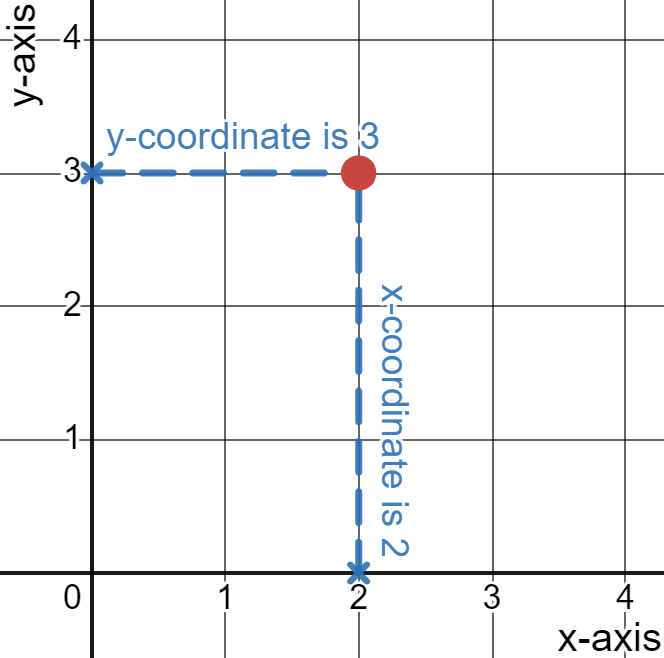
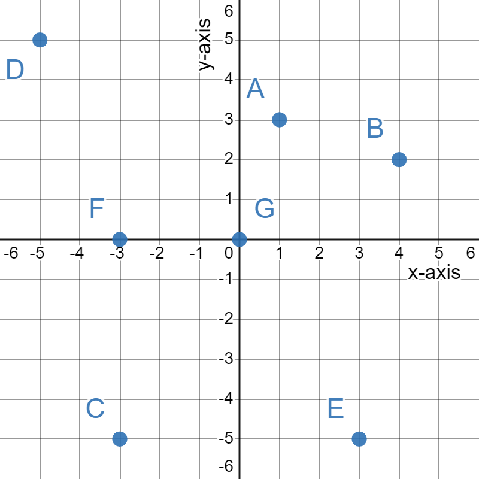
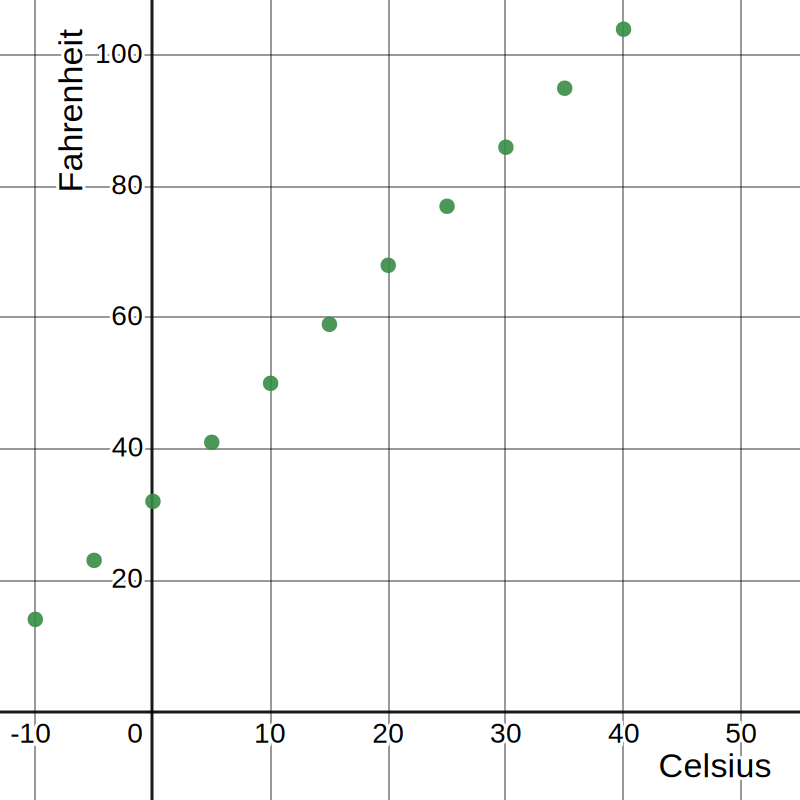
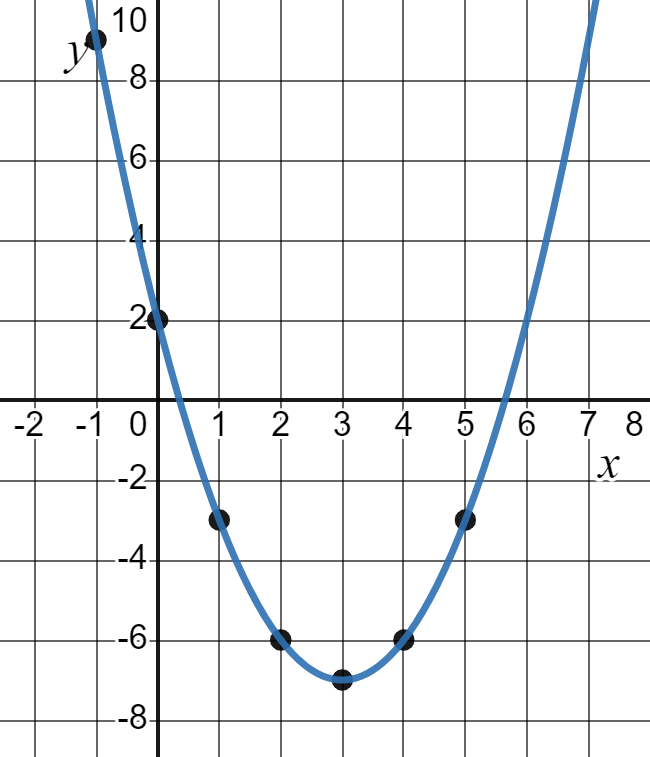

5.1 The Cartesian Coordinate System
Introduction
Legend has it that René Descartes, the 17th-century French mathematician and philosopher renowned for coining the phrase "I think, therefore I am," once lay in bed observing a bug's journey across his ceiling. In a moment of inspiration, he realized he could pinpoint the insect's location by defining its distance from the two adjoining walls that formed a corner on the ceiling.
This spark of ingenuity forever transformed the way we visualize mathematics.
The Cartesian Plane
The coordinate system that came from Descartes' work is now called the Cartesian coordinate system or the Cartesian coordinate plane.
This system is formed by two perpendicular number lines, each one called an axis. The horizontal axis is often referred to as the \(x\)-axis and the vertical axis is known as the \(y\)-axis.
The point where the two axes meet is called the origin. The origin serves as the fixed point of reference for all other points on the coordinate plane.
The point where the two axes meet is called the origin. The two axes together divide the plane into 4 rectangular quarters. We call these quadrants and refer to them as quadrant I, II, III, and IV.

Cartesian Coordinates
Graphing on the Cartesian plane hinges on knowing two values: one for the \(x\)-axis and another for the \(y\)-axis. Together, these two coordinates identify a unique point on the plane.
The coordinates of a point are always written as an ordered \((x, y)\) pair, with the \(x\)-coordinate first and the \(y\)-coordinate second. So a pair of numbers like \((2, 3)\) would represent the point that has an \(x\)-coordinate of \(2\) and a \(y\)-coordinate of \(3\).

Use an ordered pair to give the coordinates of each point labeled in this graph. Also identify the quadrant the point is in.
Solution:
A is the point \((1,3)\). This point is in quadrant I.
B is the point \((4,2)\). This point is in quadrant I.
C is the point \((-3,-5)\). This point is in quadrant III.
D is the point \((-5,5)\). This point is in quadrant II.
E is the point \((3,-5)\). This point is in quadrant IV.
F is the point \((-3,0)\). This point is on the x-axis.
G is the point \((0,0)\). This point is on the origin.
One of the most common mistakes people make with ordered pairs is to list the coordinates in reverse order. So always remember, an ordered pair has the form \((x, y)\).
Plotting Points
The key to ploting points on the Cartesian plane is remembering that coordinates are an ordered \((x, y)\) pair.
To plot the point \((5, 4)\), for instance, find \(5\) on the \(x\)-axis and draw an imaginary vertical line through it. Then find \(4\) on the \(y\)-axis and sketch an imaginary horizontal line through it. The point \((5, 4)\) is located at the spot where those two lines cross. The animation below illustrates this process.
Scatterplots
Plotting ordered pairs can be very helpful in visualizing concepts and relationships. This is especially true when the information is given as a table of values.
By viewing each pair of data in the table as an ordered pair, we can convert the table into plotted points, creating what is known as a scatterplot. The shape of the scatterplot can suggest patterns that are difficult to see from the numerical data alone.
As part of a research study, a newborn baby was weighed every month for 12 months to track its development. The weights are recorded in the table below.
| Age (months) | 0 | 1 | 2 | 3 | 4 | 5 | 6 | 7 | 8 | 9 | 10 | 11 | 12 |
| Weight (pounds) | 7.5 | 9.75 | 12.25 | 14 | 15.5 | 16.5 | 17.5 | 18.25 | 19 | 19.5 | 20.25 | 20.75 | 21.25 |
Create a scatterplot of the data and describe any patterns you see.
Solution
We will view each age/weight pairs as ordered pairs, using age as the \(x\)-coordinate and weight as the \(y\)-coordinate.

By graphing these points, we can quickly see visually that the baby's weight increased faster in the first 6 months than it did in the second six months.
Graphing Linear Equations
Whenever we encounter an equation of any type a process similar to the one we used above can be empolyed to produce a graph of that equation. The only difference is the values in the table will need to be calculated using the equation.
This is done by putting random values into the equation for the \(x\)-variable and evaluating the equation to get the corresponding \(y\)-value. The points are then plotted and a smooth line or curve is drawn through them to indicate the other values we did not compute.
As an example, let's consider the linear equation \(F = \frac{9}{5}C + 32\) which we saw in section 3.3. This formula converts temperature in degrees Celsius to degrees Fahrenheit, something that would be helpful for a US native traveling abroad.
If the temperature forecast was for \(15\) degrees Celsius, then the formula gives the corresponding temperature in degrees Fahrenheit.
\begin{align} F &= \frac{9}{5} \cdot 15+32 \\ &=27+32 \\ &= 59 \end{align}This means that a temperature of \(15\) degrees Celsius is equivalent to \(59\) degrees Fahrenheit. If you were headed outside, you might want to take a light jacket.
In the table below we've computed several more Celsius/Fahrenheit temperatures.
| Celsius | -10 | -5 | 0 | 5 | 10 | 15 | 20 | 25 | 30 | 35 | 40 |
| Fahrenheit | 14 | 23 | 32 | 41 | 50 | 59 | 68 | 77 | 86 | 95 | 104 |
With this table, we can now graph the ordered pairs to visualize the relationship between Celsius and Fahrenheit.

Since we only plotted some of the potential Celsius/Fahrenheit pairs (there are other we could have computed), we'll connect the dots with a line to show all the possible pairs.

Any equation like this one, which produces the graph of a line, is called a linear equation. Linear equations do not have any powers or roots on the variables. We will work with linear equations more in the next two sections.
Graphing Nonlinear Equations
Not every equation that we encounter will result in the graph of a line. Some might have some type of curve to them, like the graph from the baby data.
We will finish this section with an example of a nonlinear equation: \(y=x^2-6x-2\). We can identify this as being nonlinear because there is a power on the \(x\).
Even though the equation is more complicated the the prior example, we will follow the same steps, starting with calculating values, the plotting the points, and finally drawing a smooth curve between them.
With linear equations, a good graph can be draw with just a few points. With nonlinear graphs, it is good practice to plot several points.
| \[x\] | \[y\] |
|---|---|
| \[-1\] | \[(-1)^2-6(-1)+2=9\] |
| \[0\] | \[(0)^2-6(0)+2=2\] |
| \[1\] | \[(1)^2-6(1)+2=-3\] |
| \[2\] | \[(2)^2-6(2)+2=-6\] |
| \[3\] | \[(3)^2-6(3)+2=-7\] |
| \[4\] | \[(4)^2-6(4)+2=-6\] |
| \[5\] | \[(5)^2-6(5)+2=-3\] |
Plotting the points and connecting them with a smooth curve gives the U-shaped graph below.

This shape is called a parabola and comes from a quadratic equation-one that has an \(x^2\) in it. We will look into the graphs of quadratic equations toward the end of this chapter.
A defining feature of every parabola is that it can be split into two mirror image halves. If you locate the point where the graph turns around, in this case \((3, -7)\), then a vertical line through that point will split the two halves. That point is called the vertex of the parabola. Identifying the vertex when you are graphing a parabola can be helpful since once you've drawn one half you can simply make a mirror copy for the other half.
Conclusion
In this section, we explored the Cartesian coordinate system, plotting ordered pairs, and visualizing the relationships between variables through scatterplots. We learned how linear equations result in straight-line graphs, while nonlinear equations can give rise to intriguing curves like parabolas.
As we move forward into the next section we will consider the concept of slope, which plays a pivotal role in understanding the steepness and direction of lines.